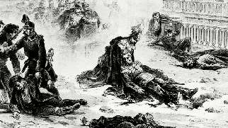

Борис Акунин
Мой календарь
Сегодня ничего позитивного и жизнеутверждающего. Просто годовщина, которую забывать нельзя.
13 (1) марта 1881 года произошло самое роковое событие в новой российской истории.
На набережной Екатерининского канала в Санкт-Петербурге террористы взорвали экипаж самого лучшего русского царя Александра II, а заодно убили конвойного казака Александра Малеичева и четырнадцатилетнего Максима Захарова, случайно оказавшегося рядом. Это у террористов называется collateral damage, «сопутствующий ущерб». Типа «лес рубят - щепки летят». (Хорошие люди от плохих отличаются тем, что не признают никаких оправданий для гибели невинных жертв - ни общественного блага, ни рая на земле, ничего).
Стало быть, дуболом и деспот Николай I был свободолюбцам окей, на него они не покушались. А на правителя, который освободил крепостных, провел демократические реформы и дал стране мощный толчок к развитию, они охотились, как на зверя. И в конце концов убили.
Всё последующее было уже необратимо. Дедка за репку, бабка за дедку. Наследник отменил реформы и закрутил гайки. Резьбу сорвало, и произошла революция. Она вызвала жестокую гражданскую войну. Война привела к распаду и хаосу, так что для восстановления хоть какого-то порядка понадобилась диктатура. Диктатура привела к массовым репрессиям, поделила народ на зеков и вертухаев, расплодила стукачей и приспособленцев. Это искорежило и испоганило национальную ментальность, которая периодически дает уродливые нарывы. И так далее, и так далее. Конца не видно.
А определилось всё 13 марта 1881 года. Не забывайте этот день.